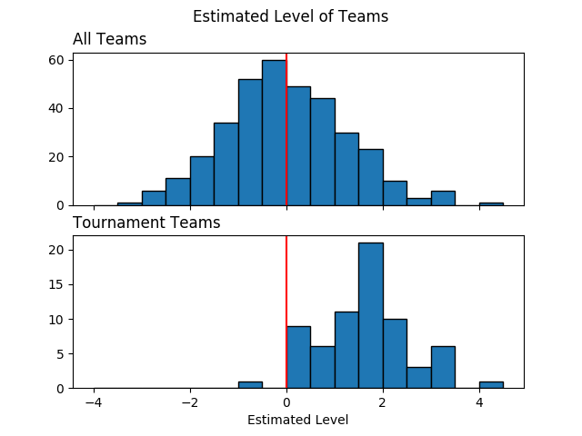
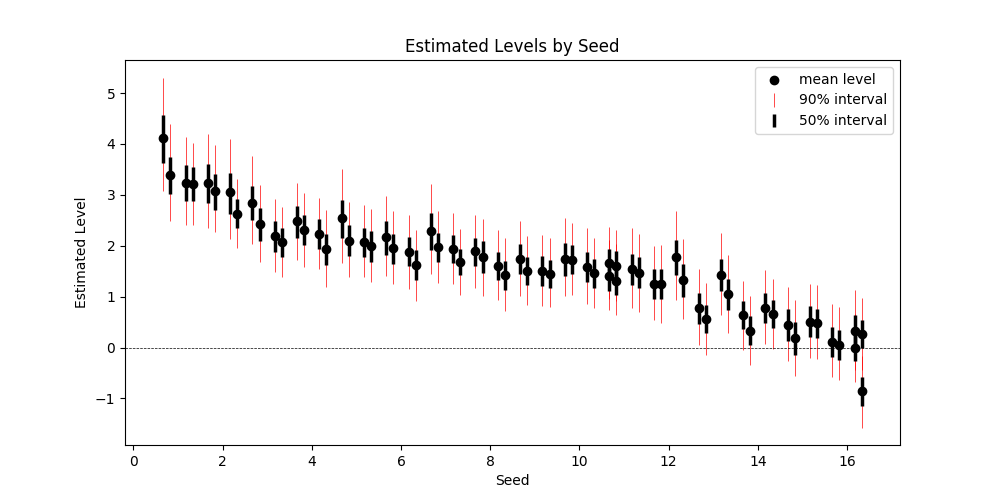
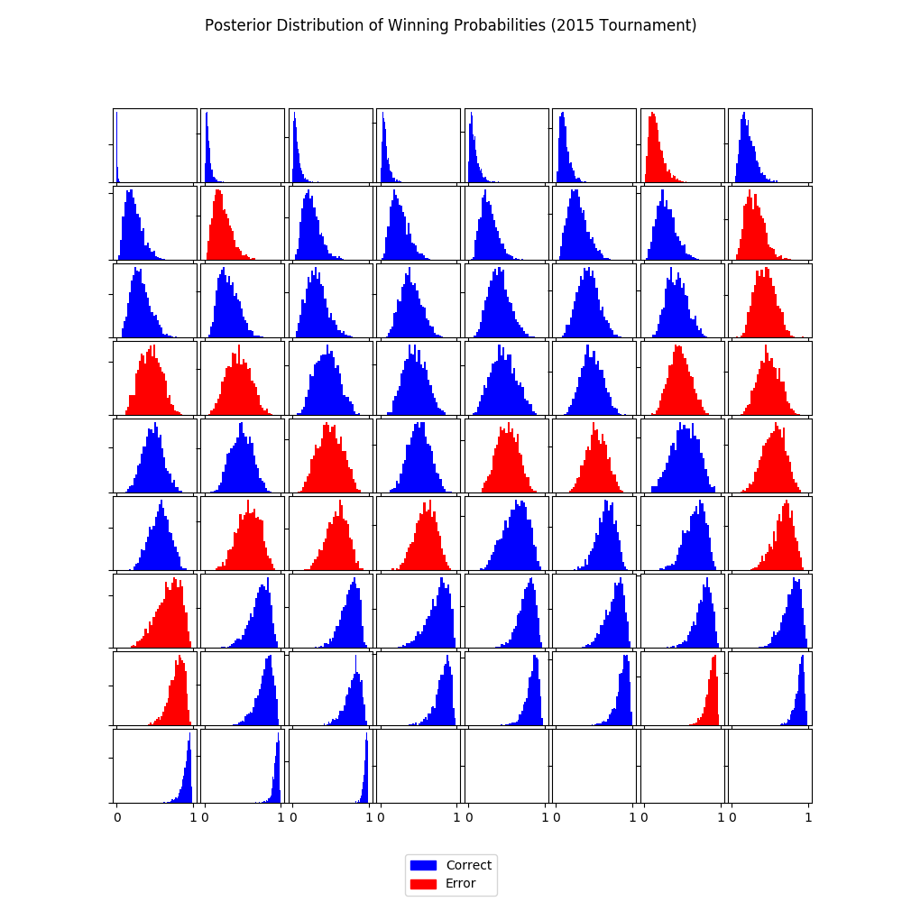
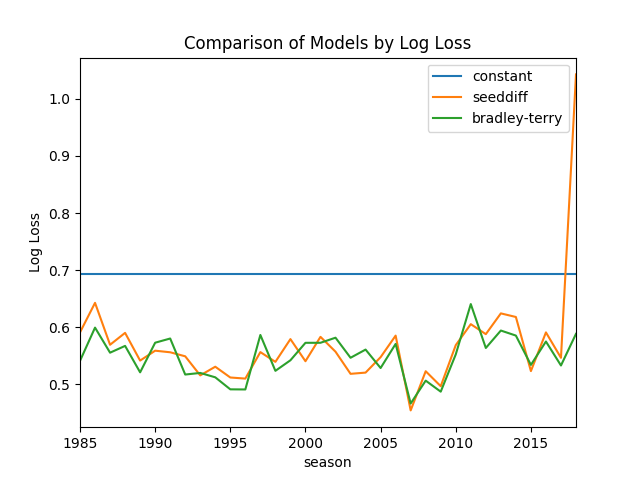

The Bradley-Terry Model is the standard approach for analyzing binary pairwise data. This applies to our problem because each data instance represents a binary outcome (whether team1 won the game) on a pair of teams. We use Bradley-Terry model to estimate the level of each team and to estimate the winning probabilities for the tournament games. Furthermore, we do this using Bayesian inference which helps capture the uncertainty in our predictions and provide useful insight.
TLDR:
Bradley-Terry Model assumes that the probability of winning, denoted \(\pi\), depends on the level of each team, denoted \(\alpha\). The goal is to estimate \(\alpha\) for every team using the outcome of the regular season games. Positive \(\alpha\) means that the team has a winning influence, negative means losing influence, and zero means that a team is neutral.
For (a potentially new) game \(i\) between team \(j[i]\) and team \(k[i]\), we'll estimate the winning probability for team \(j[i]\) as:
\[\pi_i = P(j[i] \text{ win}) = \frac{\exp(\alpha_{j[i]} - \alpha_{k[i]})}{\exp(\alpha_{j[i]} - \alpha_{k[i]}) + 1}\]
Here's a table to put things in perspective:
| Difference in Levels (\(\alpha_{j} - \alpha_{k}\)) | Probability of Winning (\(\pi_i\)) | Odds of Winning (\(\frac{\pi_i}{1-\pi_i}\)) |
|---|---|---|
| 0 | 50% | 1:1 |
| 0.7 | 67% | 2:1 |
| 1.1 | 75% | 3:1 |
| 1.6 | 83% | 5:1 |
| 2.0 | 88% | 7.5:1 |
| 3.0 | 95% | 20:1 |
| 4.0 | 98% | 55:1 |
| 5.0 | 99.3% | 150:1 |
Here we state the model in more detail for those interested. Bradley-Terry model can be seen as a logistic regression onto the level of each team.
\[y_i \sim Bernoulli(\pi_i)\] \[\text{logit}(\pi_i) = \alpha_{j[i]} - \alpha_{k[i]}\]
For full Bayesian inference, we need to set a prior distribution for the unknown parameters. We'll start with a normal prior on the levels:
\[\alpha \sim N(0, \sigma^2)\]
According to this prior, an average team has a neutral effect on the outcome of the game. About 68% of teams have levels within 1 standard deviation away from being neutral, and about 95% of teams within 2 deviations.
We start with a noninformative uniform hyperprior on \(\sigma\).
We "fit" the model by sampling from the posterior distribution using
MCMC in stan. In simple terms, we simulate thousands of scenarios of the world
based on the observed data. We'll use the model parameters generated
from each scenario to perform inference and prediction.
import pandas as pd import numpy as np from matplotlib import pyplot as plt import matplotlib.patches as mpatches import seaborn as sns from src import utils # see src/ folder in project repo from src.data import make_dataset import pystan from sklearn.metrics import log_loss import pickle
print_df = utils.create_print_df_fcn(tablefmt='html'); show_fig = utils.create_show_fig_fcn(img_dir='models/bradley_terry/');
data = make_dataset.get_train_data_v1(2015)
print_df(data.head())
| season | daynum | numot | tourney | team1 | team2 | score1 | score2 | loc | team1win | seed1 | seednum1 | seed2 | seednum2 | seeddiff | ID | |
|---|---|---|---|---|---|---|---|---|---|---|---|---|---|---|---|---|
| 0 | 2015 | 11 | 0 | 0 | 1103 | 1420 | 74 | 57 | 1103 | 1 | nan | nan | nan | nan | nan | 2015_1103_1420 |
| 1 | 2015 | 11 | 0 | 0 | 1104 | 1406 | 82 | 54 | 1104 | 1 | nan | nan | nan | nan | nan | 2015_1104_1406 |
| 2 | 2015 | 11 | 0 | 0 | 1112 | 1291 | 78 | 55 | 1112 | 1 | Z02 | 2 | nan | nan | nan | 2015_1112_1291 |
| 3 | 2015 | 11 | 0 | 0 | 1113 | 1152 | 86 | 50 | 1113 | 1 | nan | nan | nan | nan | nan | 2015_1113_1152 |
| 4 | 2015 | 11 | 0 | 0 | 1102 | 1119 | 78 | 84 | 1119 | 0 | nan | nan | nan | nan | nan | 2015_1102_1119 |
teams = set(data['team1'].unique()).union(data['team2'].unique()) team_f2id = dict(enumerate(teams, 1)) # start from 1 for stan's one-based indexing team_id2f = {v:k for k, v in team_f2id.items()}
model_code = ''' data { int<lower=0> T; int<lower=0> N; // number of games in regular season int<lower=0> N_tourney; // number of games in tournament int<lower=1, upper=T> j[N + N_tourney]; // index for team 1 int<lower=1, upper=T> k[N + N_tourney]; // index for team 2 int<lower=0, upper=1> team1win[N]; } transformed data { } parameters { real alpha[T]; real<lower=0> sigma; // variance for team levels } transformed parameters { real<lower=0, upper=1> pi[N_tourney]; // probability that team1 wins for(n in 1:N_tourney) { pi[n] = inv_logit(alpha[j[N+n]] - alpha[k[N+n]]); } } model { vector[N] theta; // logits alpha ~ normal(0, sigma); for(n in 1:N) theta[n] = alpha[j[n]] - alpha[k[n]]; team1win ~ bernoulli_logit(theta); } generated quantities { } ''' sm = pystan.StanModel(model_code=model_code)
stan_data = { 'T': len(teams), 'N': (data.tourney == 0).sum(), 'N_tourney': (data.tourney == 1).sum(), 'j': data['team1'].map(team_id2f).values, 'k': data['team2'].map(team_id2f).values, 'team1win': data.loc[data.tourney == 0, 'team1win'].values }
fit = sm.sampling(data=stan_data, iter=1000, chains=4) with open("bradley-terry.pkl", "wb") as f: pickle.dump({'model_code': model_code, 'sm': sm, 'fit': fit}, f, protocol=-1)
It's important to check that MCMC algorithm converged. This is done offline to avoid clutter.
la = fit.extract(permuted=True) # extract MCMC samples alpha = la['alpha'] # estimated team levels tourney_teams = list(set(data.loc[data['tourney'] == 1, ['team1', 'team2']].values.flatten())) tourney_teamsf = [team_id2f[t]-1 for t in tourney_teams] # subtract 1 for zero-based indexing team_seeds = pd.DataFrame(np.vstack([data[['team1', 'seednum1']].dropna().values, data[['team2', 'seednum2']].dropna().values]) .astype(int), columns=['team', 'seed']).drop_duplicates() fig, axes = plt.subplots(2, 1, sharex=True) bins = np.arange(-4, 5, 0.5) axes[0].hist(np.mean(alpha, axis=0), edgecolor='black', bins=bins); axes[1].hist(np.mean(alpha[:, tourney_teamsf], axis=0), edgecolor='black', bins=bins); axes[0].set_title('All Teams', loc='left') axes[1].set_title('Tournament Teams', loc='left') axes[1].set_xlabel('Estimated Level') for i in range(2): # axes[i].grid(axis='x') axes[i].axvline(0, c='r') plt.suptitle('Estimated Level of Teams') show_fig('average_team_levels.png')

This figure gives us a few insights about our model. Point 1 below suggests that the model is generally learning the right pattern. Points 2 and 3 might indicate lack of fit and a potential direction for model expansion.
team_levels = (pd.DataFrame({ 'alpha_mean':np.mean(alpha[:, tourney_teamsf], axis=0), 'alpha_l05':np.quantile(alpha[:, tourney_teamsf], 0.05, axis=0), 'alpha_l25':np.quantile(alpha[:, tourney_teamsf], 0.25, axis=0), 'alpha_median':np.quantile(alpha[:, tourney_teamsf], 0.50, axis=0), 'alpha_u75':np.quantile(alpha[:, tourney_teamsf], 0.75, axis=0), 'alpha_u95':np.quantile(alpha[:, tourney_teamsf], 0.95, axis=0), }, index=tourney_teams) .pipe(pd.merge, team_seeds, left_index=True, right_on='team') .pipe(lambda x: x.sort_values(['seed', 'alpha_mean'], ascending=[True, False])) ) error_bars_50 = [team_levels['alpha_mean'] - team_levels['alpha_l25'], team_levels['alpha_u75'] - team_levels['alpha_mean']] error_bars_95 = [team_levels['alpha_mean'] - team_levels['alpha_l05'], team_levels['alpha_u95'] - team_levels['alpha_mean']] fig, ax = plt.subplots(figsize=(10, 5)) x = team_levels['seed'].values + np.tile([-0.33, -0.17, 0.17, 0.33], 17) ax.errorbar(x, team_levels['alpha_mean'], yerr=error_bars_95, fmt='none', c='r', label='90% interval', lw=0.5) ax.errorbar(x, team_levels['alpha_mean'], yerr=error_bars_50, fmt='none', c='k', label='50% interval', lw=2.5) ax.scatter(x, team_levels['alpha_mean'], c='k', label='mean level') ax.set_xlabel('Seed') ax.set_ylabel('Estimated Level') ax.axhline(0, color='k', linestyle='--', lw=0.5) ax.set_title('Estimated Levels by Seed') ax.legend() show_fig('estimated_levels_by_seed.png')

How can we check that our estimates are good? One way is to compare our estimates against the tournament seeds. The figure above confirms that the two are in agreement. Note that seeds are assigned within conference (or region?) so four teams share the same seed.
There's some separation in estimated levels among the top two seeds from every conference, bottom (below 12) seeds, and the rest of the pack.
pi = la['pi'] idx_sorted = np.argsort(np.median(pi, axis=0)) pi_sorted = pi[:,idx_sorted] y_true = data.loc[data.tourney == 1, 'team1win'].values y_pred = np.median(pi, axis=0) > 0.5 color_sorted = np.where(y_true == y_pred, 'b', 'r')[idx_sorted] nrow = 9 ncol = 8 fig, axes = plt.subplots(nrow, ncol, figsize = (10, 10), sharex=True) for row in range(nrow): for col in range(ncol): idx = row * ncol + col axes[row, col].set_yticklabels([]) if idx < (y_true.shape[0]): axes[row, col].hist(pi_sorted[:,idx], bins=30, color=color_sorted[idx]); blue_patch = mpatches.Patch(color='blue', label='Correct') red_patch = mpatches.Patch(color='red', label='Error') fig.legend(handles=[blue_patch, red_patch], loc='lower center') plt.subplots_adjust(left=None, bottom=None, right=None, top=None, wspace=0.05, hspace=0.05) plt.suptitle('Posterior Distribution of Winning Probabilities (2015 Tournament)') show_fig('win_probabilities.png')

Here, we use our simulations to predict the winning probabilities. This is where we can leverage the power of Bayesian inference.
Each subplot above represents a tournament game and the histogram contains the predicted win probabilities (that team1 will win) over many simulated scenarios. For convenience, histograms are ordered by the median predicted win probability.
In order to check if the model is consistent with observed outcomes, I used the median predicted probability to decide whether or not team1 is predicted to win. Blue and red histograms indicate whether the model was correct or not, respectively. Few things to note here:
Let's evaluate the predictions over all seasons using the log-loss curve as we did for benchmark models. We can do this by creating a function that wraps around the essential part of the code for making the prediction. The code below takes a while and should ideally be run in parallel.
def evaluate(sm, season): data = make_dataset.get_train_data_v1(season=season) teams = set(data['team1'].unique()).union(data['team2'].unique()) team_f2id = dict(enumerate(teams, 1)) # start from 1 for stan's one-based indexing team_id2f = {v:k for k, v in team_f2id.items()} stan_data = { 'T': len(teams), 'N': (data.tourney == 0).sum(), 'N_tourney': (data.tourney == 1).sum(), 'j': data['team1'].map(team_id2f).values, 'k': data['team2'].map(team_id2f).values, 'team1win': data.loc[data.tourney == 0, 'team1win'].values } fit = sm.sampling(data=stan_data, iter=1000, chains=4) la = fit.extract(permuted=True) # extract MCMC samples pi = la['pi'] y_true = data.loc[data.tourney == 1, 'team1win'].values return log_loss(y_true, np.median(pi, axis=0)) log_losses = [] seasons = range(1985, 2019) for season in seasons: print('season = '.format(season)) log_losses.append(evaluate(sm=sm, season=season)) with open("bradley-terry-logloss.pkl", "wb") as f: pickle.dump({'log_losses': log_losses, 'seasons':seasons}, f, protocol=-1)
Here is the resulting log-loss curve over all seasons.
fig, ax = plt.subplots() log_loss_df = pd.read_csv('./log_loss_benchmark.csv').set_index('season') log_loss_df['bradley-terry'] = log_losses log_loss_df.plot(ax=ax) ax.set_title('Comparison of Models by Log Loss') ax.set_ylabel('Log Loss') show_fig('log_loss.png')

The predictive performance of Bradley-Terry model is comparable to
the SeedDiff benchmark model. This is not surprising because they're
using almost the same information.
A modeling framework
As mentioned above, Bradley-Terry model is a special case of logistic regression. This is a model we can build on by adding additional features. We'll also be able to expand on the model by using hierarchical Bayesian models.
Estimated levels of all teams
While only the top 68 teams are seeded, we now have an estimate of the levels of every team in NCAA. We might be able to leverage this for future models.
Insight about competitiveness
The estimated levels of the teams gives us our first look at defining and quantifying competitiveness. The posterior histograms can also help visualize the competitiveness of the games.
Is there an effect of having won in a previous meeting during the season
The current model estimates the team levels only based on whether a team won the game or not. For example, whether a team won by 20 points or 2 points is irrelevant for this model. We'll try to expand the model to account for this.
We might expand the variance component to \(\sigma_{k[i]}^2\) where \(k\) indexes over conferences. This might help us compare the competitiveness of the conferences.
Normal distribution can be restrictive. For example, it implicitly constrains the estimates so that 68% of the team levels are within one standard deviation, 95% within two, and so on. We might use a T-distribution (infinite mixture of normals) to build a more robust model.
An important question is whether there's any systematic difference between regular season games and tournament games. For example,